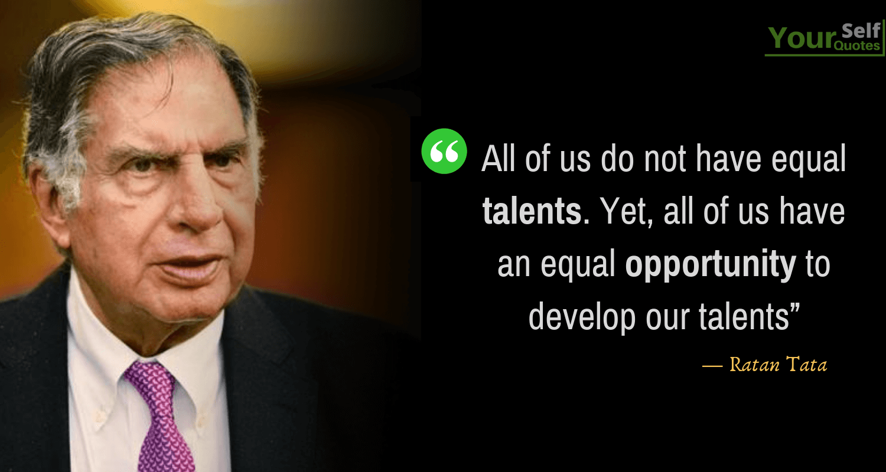
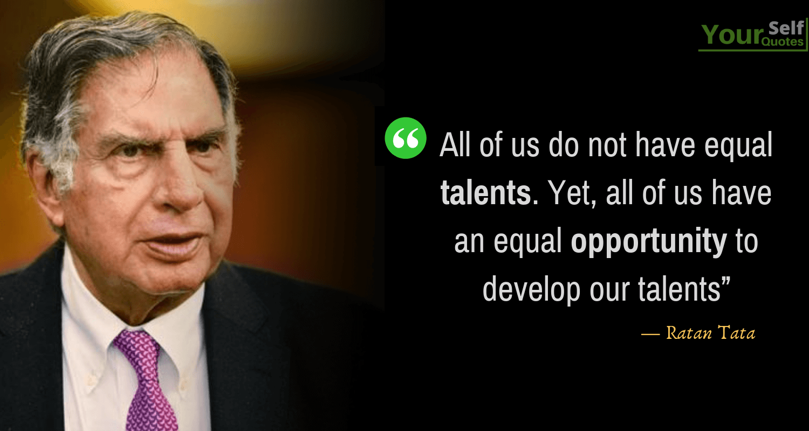

Education
School Education-He studied at the Campion School, Mumbai till the 8th class.
Higher Education-After which, he studied at the Cathedral and John Connon School in Mumbai, the Bishop Cotton School in Shimla, and the Riverdale Country School in New York City, which he graduated from in 1955.
Graduation-After graduating from high school, Tata enrolled in Cornell University, from which he graduated with a bachelor's degree in architecture in 1959.
2008-In 2008, Tata gifted Cornell $50 Million, becoming the largest international donor in the university's history.
Career
1970's-In the 1970s, Tata was given a managerial position in the Tata group. He achieved initial success by turning the subsidiary National Radio and Electronics (NELCO) around, only to see it collapse during an economic slowdown.
1991-In 1991, J. R. D. Tata stepped down as chairman of Tata Sons, naming him his successor.
Initially, Tata faced stiff resistance from the heads of various subsidiaries, who had a large amount of operational freedom under the senior Tata's tenure.
New Invention-He also conceptualized and spearheaded the development of the Tata Nano car, which helped put cars at a price-point within reach of the average Indian consumer.Tata Motors has since rolled out the first batch of Tigor Electric Vehicles from its Sanand Plant in Gujarat, which Tata has described as "fast-forward[ing] India's electric dream."
Upon turning 75, Ratan Tata resigned his executive powers in the Tata group on 28 December 2012. An ensuing leadership crisis over his succession drew intense media scrutiny.The board of directors and legal division of the company refused to appoint his successor, Cyrus Mistry, a relative of Tata and the son of Pallonji Mistry of the Shapoorji Pallonji Group, which was the largest individual shareholder of the Tata group.
On 24 October 2016, Cyrus Mistry was removed as chairman of Tata Sons, and Ratan Tata was made interim chairman. A selection committee, which included Tata as a member, was formed to find a successor.
In February 2017, Mistry was removed as a director for Tata Sons.The National Company Law Appellate Tribunal later found in December 2019 that the removal of Cyrus Mistry as the chairman of Tata Sons was illegal, and ordered that he be reinstated.
On appeal, India's Supreme Court upheld the dismissal of Cyrus Mistry.
Tata has also invested in multiple companies with his own wealth. He has invested in Snapdeal – one of India's leading e-commerce websites. In January 2016, he invested in Teabox, an online premium Indian Tea seller,and CashKaro.com, a discount coupons and cash-back website.He has made small investments in both early and late stage companies in India, such as INR 0.95 Cr in Ola Cabs.
In April 2015, it was reported that Tata had acquired a stake in Chinese smartphone startup Xiaomi.In 2016, he invested in Nestaway an online real-estate portal that later acquired Zenify to start the online real-estate and pet-care portal, Dogspot.Tata also launched India's companionship startup for senior citizens, Goodfellows, in a bid to encourage intergenerational friendships."
Milestones
Ratan Tata achieved numerous milestones during his tenure, including the acquisition of notable companies like Jaguar Land Rover by Tata Motors.
Order of Australia (2023)
Assam Baibhav (2021)
Honorary Knight Grand Cross of the Order of the British Empire (2014)
Padma Vibhushan (2008)
Nano Car Invention (2008)
Maharashtra Bhushan (2006)
Padma Bhushan (2000)

 
